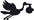

 04/11/1835 Oostkerke BEL -
Ouders:
Familie:SCHERRENS Franciscus
VAN PECKELBEEM Theresia Francisca
Verwante:CATTOOR WallyCATTEEUW Rosalie Sophie
20/06/1836 Diksmuide BEL -05/03/1903 Comines FRA
Ouders:
Kind(eren):SCHERRENS Maria Elisa
SCHERRENS Marie Louise Euphrasie

Ongekend -
Ouders:
Familie:
Verwante:SCHERRENS Christel Caroline
17/11/1957 Brugge BEL -
Ouders:
Kind(eren):naam
naam